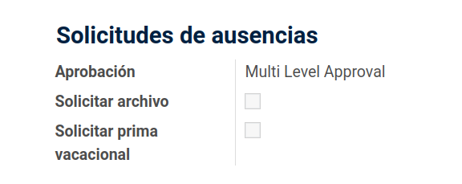
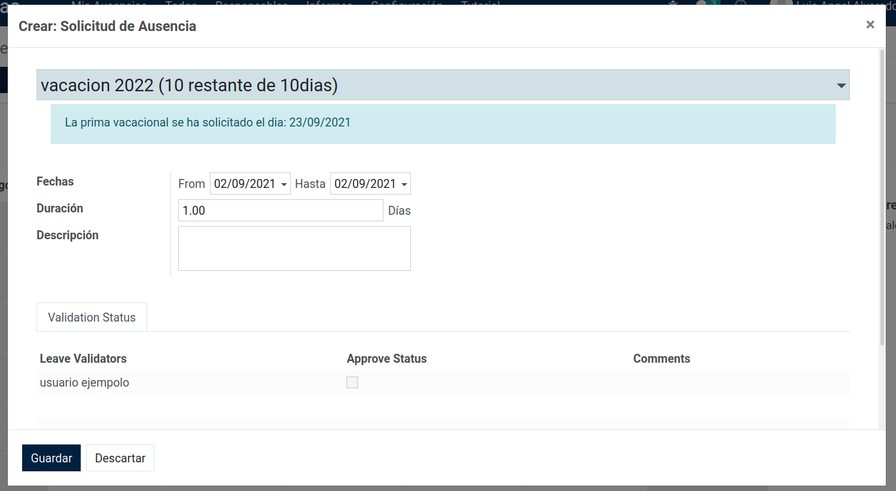
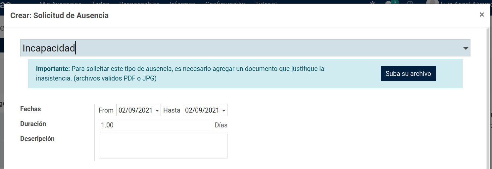

Administra las vacaciones de tus empleados.
Este modulo mejora algunos elementos del modulo de ausencias agregando:
1. Solicitar prima vacacional Para configurar este modulo agrege la opcion deseada en los tipos de ausencias tipos de solicitudes Prima vacacional Solicitar archivo  |